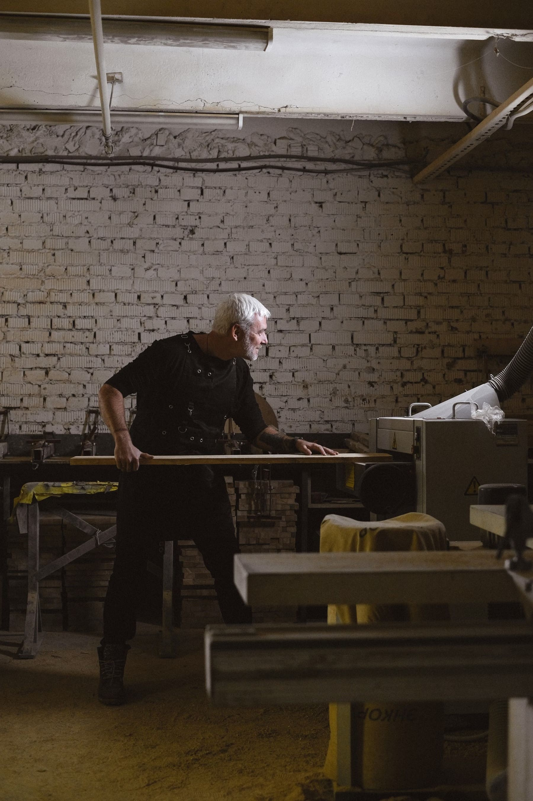
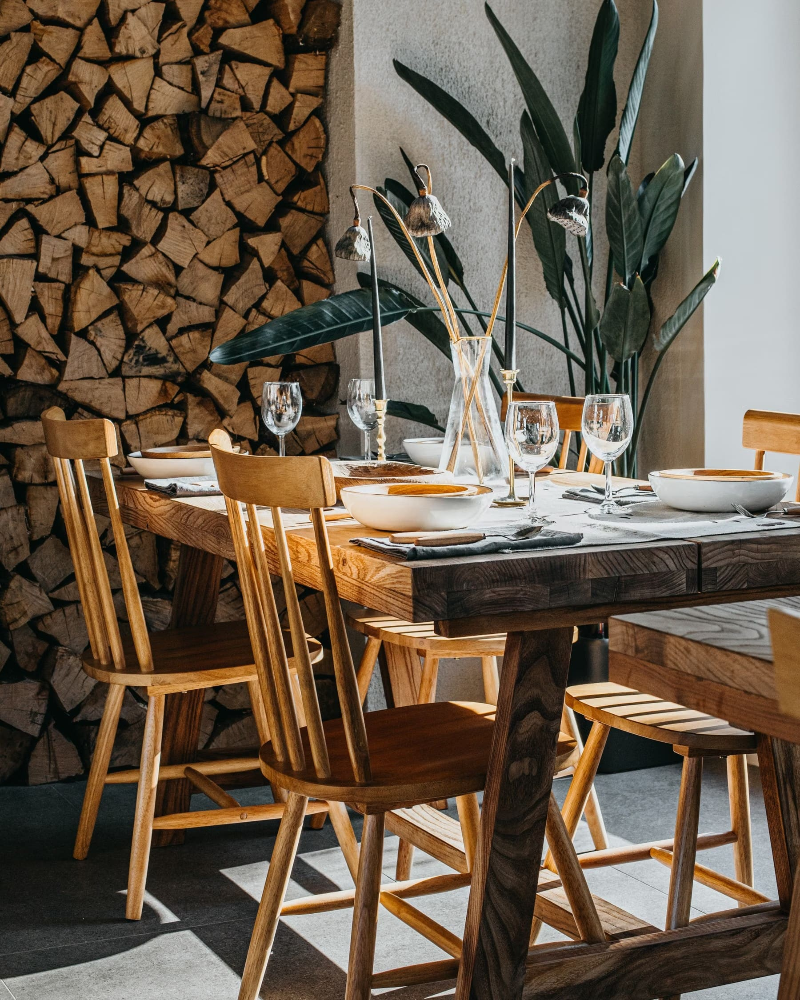
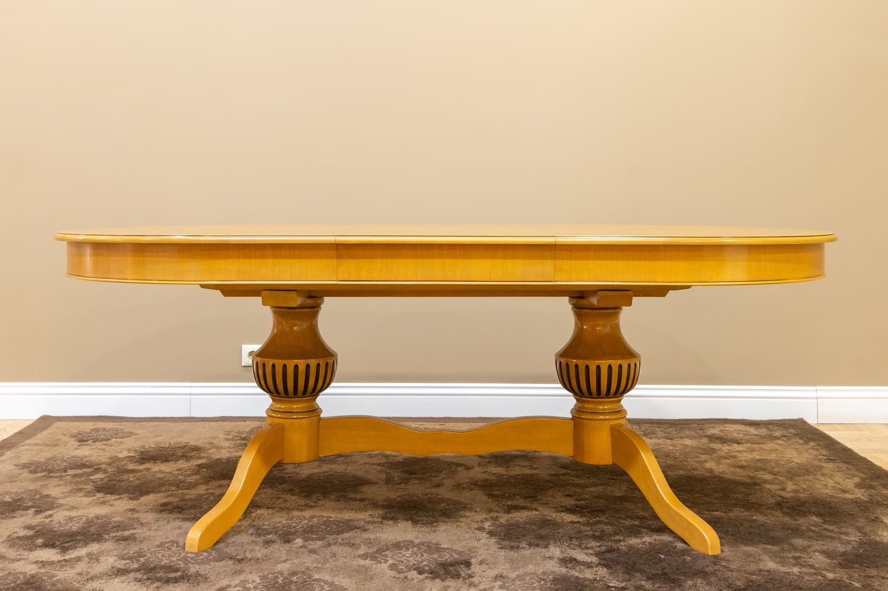
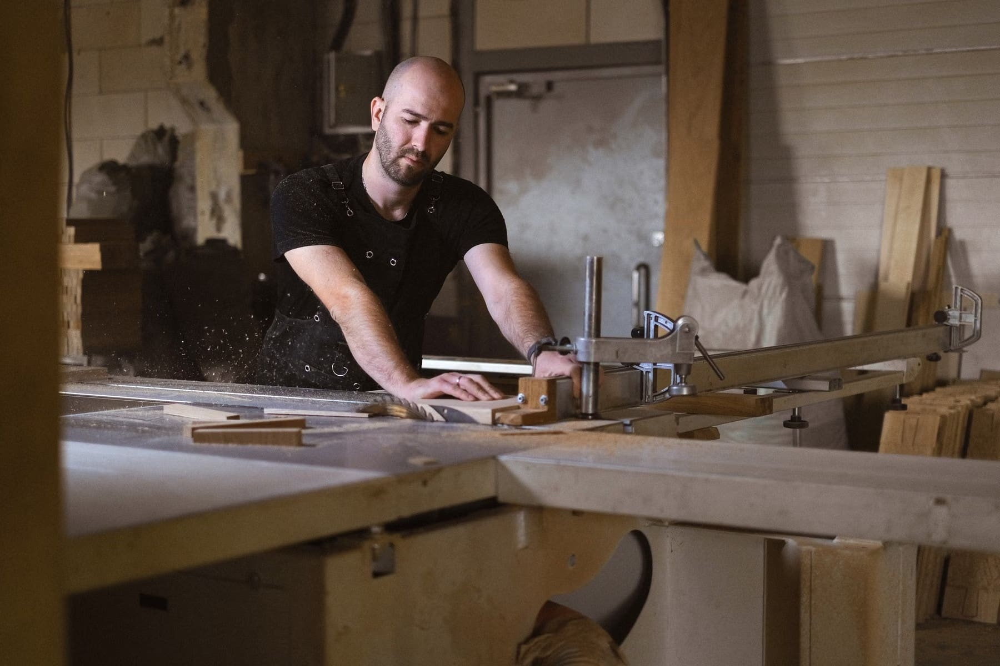

1954'ten bu yana ahşapla çalışan bir ailenin bilgisiyle, masif ahşaptan yemek masaları, TV üniteleri, vitrinler ve çocuk yatakları tasarlıyor ve üretiyoruz.

Güven Kerestecilik'in İkitelli'deki atölyesinde, onlarca yıldır ahşabı seçen, kurutan ve işleyen bir ailenin birikimi var. By Lumberman, bu birikimi evlere taşıyan tasarım atölyesidir.
Hangi ağacın hangi parçaya yakıştığını bildiğimiz için her mobilya, kendi kerestemizden ve uzun ömürlü olsun diye üretilir.
Tüm parçalar ölçünüze ve kullanacağınız alana göre uyarlanabilir. Fiyat ve detay için yazmanız yeterli.
Masif ahşap yemek masaları ve sandalyeler; ayaklı, tabla ayaklı ve yuvarlak modeller.

Torna ayaklı, kalın tablalı sehpalar; salonun odak noktası.

Camlı vitrinler, kemerli dolaplar ve masif TV üniteleri.
Ev şeklinde ve korkuluklu, yere yakın çocuk yatakları; doğal ahşaptan.

Keresteciler Sitesi'ndeki atölyemizde üretimi ve hazır parçaları yakından görebilirsiniz.
Ölçü, fotoğraf ya da beğendiğiniz bir model gönderin; size uygun parçayı birlikte belirleyelim.